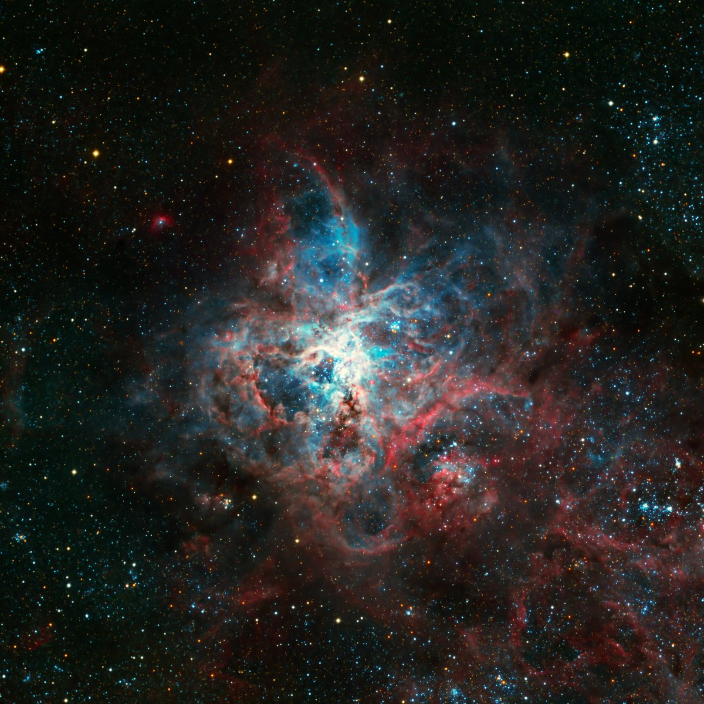

Интересные факты о космосе: Тайны бескрайней Вселенной
Космос - это безграничное пространство вселенной.
В этой статье мы расскажем о самых загодчных тайнах нашей вселенной.
Безграничные размеры космоса
Вселенная, в которой мы существуем, оценивается в размере более 90 миллиардов световых лет в диаметре. Однако это лишь предположение, и ученые продолжают исследования, чтобы точнее определить границы космоса.
Звезды – источники света и жизни
Звезды играют важную роль в космосе. Они служат источниками света и тепла, и без них космическое пространство было бы абсолютно темным. Звезды являются местами рождения новых планет и галактик, и они существуют в разных размерах и формах, что делает их уникальными и захватывающими объектами для исследования.
Сириус (α Большого Пса)
Наблюдательные данные
Тип: двойная звезда
Созвездие: Большой Пёс
Толиман (α Центавра)
Наблюдательные данные
Расстояние: 4,36 св. лет
Созвездие: Центавр
Канопус (α Киля)
Наблюдательные данные
Расстояние: 310 ± 20 св. лет
Созвездие: Киль
Самый большой космический объект
Самым большим космическим объектом в нашей вселенной является «Великий Магелланов Облак» , который представляет собой скопление звезд, газа и пыли. Он расположен на расстоянии около 160 тысяч световых лет от Земли и виден в южном полушарии.
Статья опубликована